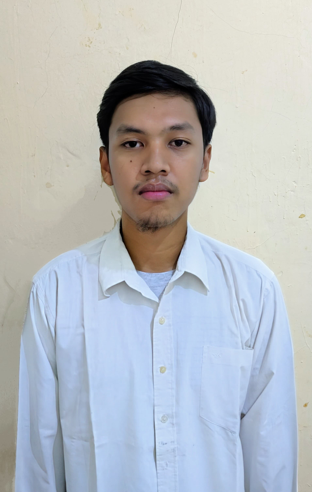

Assalamu'alaikum & Salam Hangat, Saya
Hafed Parully
Yusman
Pemuda 19 tahun asal Bogor, Jawa Barat. Menggabungkan kedalaman spiritual sebagai Guru Agama & Pembaca Al-Qur'an Bertajwid (pengalaman 1 tahun mengajar), ketahanan fisik sebagai Juara 1 Futsal se-RW, Juara 2 Tarkam & Juara 1 Finisher 5K (25 Menit), serta ketelitian mekanikal dalam Dunia Otomotif.

Hafed Parully Yusman
Pendidik Agama • Atlet • Otomotif
1 Tahun
Guru Agama & Tajwid25:00
Juara 1 (Pace 5'00")Podium 1 & 2
Liga RW & TarkamPassion
Mesin & ModifikasiPengajaran Agama & Pemahaman Tajwid
Berbekal 1 tahun pengalaman mengajar guru agama, Hafed membimbing generasi muda dengan pendekatan yang komunikatif, sabar, serta berpedoman kuat pada kaidah tartil membaca Al-Qur'an.
1 Tahun Dedikasi Mengajar
Membimbing santri dan siswa dalam akidah, akhlak, fikih ibadah harian, serta bimbingan membaca Al-Qur'an dari tingkat pemula hingga tartil.
Tartil & Kaidah Tajwid
Membaca ayat suci Al-Qur'an secara fasih sesuai *makharijul huruf*, hukum bacaan nun sukun/tanwin, mim sukun, mad, hingga sifat huruf untuk menjaga keaslian firman Allah SWT.
Penanaman Akhlak & Karakter
Menanamkan disiplin, sportivitas, dan kerendahan hati kepada generasi muda, membuktikan bahwa seorang Muslim bisa religius sekaligus berprestasi di arena fisik dan modern.
Eksplorasi Kaidah Tajwid Bersama Hafed
Klik kategori di bawah untuk mempelajari kaidah yang diterapkan Hafed dalam pengajaran tahsin.
Prestasi Atletik & Jiwa Kompetisi
Kedisiplinan fisik dan daya juang teruji nyata di lintasan lari dan lapangan futsal bergengsi di wilayah Bogor dan sekitarnya.
Juara 1 Finisher Running 5K
Juara 1 Liga Futsal se-RW
Turnamen Bergengsi Antar-Wilayah RW di Bogor
Memimpin tim dengan strategi taktis, daya juang pantang menyerah, dan pertahanan solid. Berhasil menyapu bersih partai eliminasi hingga menembus podium tertinggi.
Juara 2 Liga Futsal Tarkam
Kompetisi Terbuka Antar-Klub Futsal Penuh Rivalitas
Pertarungan fisik dan mentalitas di turnamen tarkam yang penuh rivalitas ketat. Bertahan dari babak penyisihan hingga partai final penentu.
Ajak Sparring Futsal / Lari Bareng?
Hafed terbuka untuk agenda tanding persahabatan di Bogor.
Dunia Otomotif & Presisi Mesin
Kecintaan mendalam terhadap teknologi otomotif, performa mesin Roda Dua, perawatan presisi, serta seni modifikasi yang fungsional dan estetis.
Engine & Performance Tuning
Memahami alur mekanis mesin bakar, sistem suplai bahan bakar, kelistrikan kendaraan, dan optimalisasi rasio tenaga untuk efisiensi serta responsivitas tarikan maksimal.
Roda Dua
Antusiasme terhadap tren motor harian/touring, setup suspensi handling, estetika clean look modifikasi.
Safety & Road Discipline
Bagi Hafed, kecintaan otomotif sejati selalu berjalan selaras dengan etika berkendara yang bertanggung jawab, pemahaman titik buta (blindspot), dan keselamatan sesama pengguna jalan.
Suka Diskusi Seputar Modifikasi & Motor/Mobil?
Mari bertukar wawasan tentang setup mesin, tips perawatan harian, atau sunmori di Bogor.
Muda, Berkarakter, &
Berorientasi Aksi Nyata
Di usia 19 tahun, Hafed membuktikan bahwa pemuda masa kini dapat mengintegrasikan nilai-nilai spiritualitas yang teguh dengan vitalitas fisik prima dan ketertarikan teknologi mekanikal.
Berasal dari Bogor, Hafed mengedepankan komunikasi yang santun, etos kerja pantang menyerah, dan keterbukaan dalam belajar maupun membimbing generasi berikutnya.
Perjalanan & Jejak Rekam
Pendidik Agama & Pembimbing Al-Qur'an
Mengajarkan dasar-dasar syariat, hafalan surat pendek, serta tahsin tajwid terstruktur untuk mencetak generasi berkarakter.
Finisher Juara 1 Running 5K (25 Menit)
Mencatat average pace 5:00 min/km dengan strategi split yang presisi dan kebugaran kardiovaskular tingkat tinggi.
Juara 1 Liga RW & Juara 2 Liga Tarkam
Pengalaman bertanding di atmosfer kompetisi riil, melatih kepemimpinan lapangan dan ketahanan mental di bawah tekanan suporter.
Automotive Enthusiast & Tuner Enthusiast
Terus memperdalam pemahaman teknis mesin motor/mobil dan aktif dalam dinamika komunitas otomotif lokal Bogor.
Hubungi Hafed Parully Yusman
Pilih keperluan Anda untuk membuat pesan WhatsApp instan yang rapi dan langsung terhubung ke nomor pribadi Hafed di 0823-2065-9517.